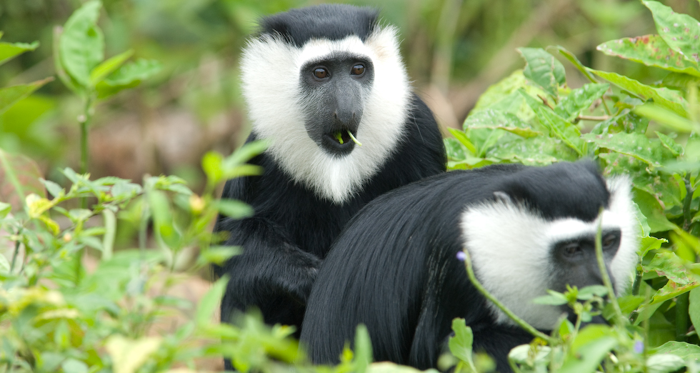
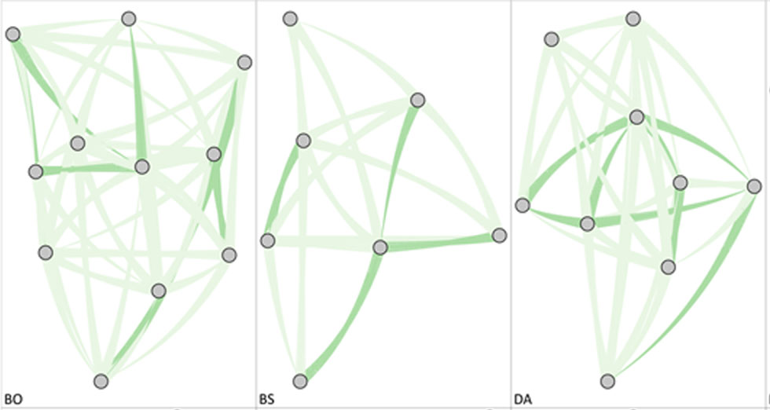

Boabeng-Fiema and its colobus population
This eco-tourism site is located close to the villages Boabeng and Fiema in central Ghana, West Africa. The monkeys are protected by traditional taboos and more recently by laws, and this site contains one of few remaining large populations of white-thighed colobus. Therefore, research at this site is key for improving conservation outlooks of this species. I am investigating the links between environmental conditions, dispersal and social relationships, health and fitness, genetic structure, and population viability. This research is done in collaboration with Pascale Sicotte at the University of Calgary and Nelson Ting at the University of Oregon.
The gut microbiome
To investigate gut microbiome structure and its fitness consequences, I combine several years of detailed ecological data, behavioral observations, and fecal DNA samples from several study groups. Groups have distinct gut microbiomes, due to differential habitat use and sociality. Natal and founder females, but not immigrant females, have similar microbiomes to other group members (Wikberg et al. 2016). High-ranking females with diverse gut microbiomes have the highest reproductive output. This finding leaves open the possibility that a diverse microbiome helps allocate resources to reproduction, but future analyses are necessary to establish the cause-and-effect relationship.
Long-term changes in social structure
The colobus population at Boabeng Fiema has increased rapidly during the last ten years. This increase in population density has been accompanied by increased rates of within-group and between-group female-female aggression while male-male aggression has remained stable. I am investigating whether this increase in female aggression is due to decreased per capita food abundance in collaboration with Pascale Sicotte and Tania Saj at the University of Calgary, Julie Teichroeb at the University of Toronto, and Andrew MacIntosh at Kyoto University.
Dispersal patterns
I use a combination of demographic and genetic data to gain a more complete understanding of male and female dispersal patterns. All males disperse from their groups, most likely to increase their reproductive opportunities (Teichroeb et al. 2011). Approximately half of the females disperse while the other half remain in their natal group to breed (Wikberg et al. 2012). Females transfer from large groups with frequent female-female aggression to smaller groups (Teichroeb et al. 2009). Many females emigrate from the main fragment with high population density, and they may settle in the surrounding fragments with lower population density and habitat quality.
Feeding competition
Colobus monkeys are highly folivorous, and leaves are often assumed not to be worth fighting over due to a widespread distribution and a relatively low nutritional quality. Although female colobus only occasionally displace other group members for access to food, they form linear dominance hierarchies that are either weakly or strongly expressed (Wikberg et al. 2013). Females aggressively participate in between-group encounters, particularly when the encounter occurs in the core area of their home range (Wikberg & Sicotte 2010). Females that frequently participate together in between-group encounters have stronger grooming relationships than others, indicating that forming strong bonds facilitates cooperative home range defense.
Social relationships
Because of the flexible dispersal pattern in the colobus females at Boabeng-Fiema, I am able to tease apart the effect that familiarity and kinship have on social bonds. Females bias grooming to familiar female kin, but not to recent immigrant kin (Wikberg et al. 2014a) . As a result, the social network is structured by kinship in groups that consist of long-term resident females and by immigration status in groups with recent immigrant females (Wikberg et al. 2014b). Between-group differences in social network metrics were not predicted by the kin composition of groups but by other demographic factors like the presence of infants and group stability (Wikberg et al. 2015).